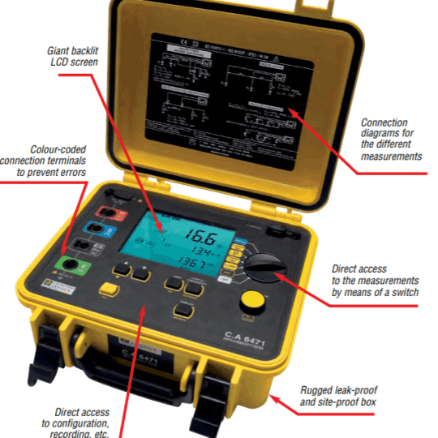

사용 장비


▣ 직무고시:전기사업법73조6항,시행규칙44조3항의 세부사항을 정하는 규정에 의거
- 산업통상자원부 고시 제 2016-16호(시행일 2017.2.7)
○직무고시란?
전기안전관리자로 선임된자는 아래표에 따라 월차, 분기, 반기, 연차점검을 실시하여야 하나 고압설비 연차점검을 위해서는 고압설비 절연내력측정과 변압기 절연유 절연 내력, 계전기시험, 열화상진단, 전원품질분석 등이 측정을 하여야함.
○ 고압설비 연차점검을 위해서는 계전기시험기, 내전압시험기, 전원품질분석기, 열화상 카메라, OT내압 및 산가시험기가 필수장비임
○ 고압전기설비에 선임된 전기안전관리자의 연차점검은 전문업체에 위탁가능
☞ 전문업체란 엔지니어링협회에 전기설비 진단부분에 등재된 업체만 가능
주)티엘엔지니어링 엔지니어링 등록 제E-09-003075호(2009.12.1)
○ 연차점검시 첨단장비와 대규모 설비의 단시간 점검이 불가함으로 전문기관에 위탁
| 측정.시험항목 | 주기 | 기록서식 | |||||
|---|---|---|---|---|---|---|---|
| 월차 | 분기 | 반기 | 연차 | 공사중 | |||
| 외관점검및부하측정 | o | o | o | o | o | 별지제1호 | |
| 저압전기설비점검 | 별지제2호 | ||||||
| -절영저항측정 | △ | o | |||||
| -누설전류측정 | △ | △ | |||||
| -접지저항측정 | o | ||||||
| 고압전기설비점검 | 별지제3호 | ||||||
| -절연저항측정 | o | ||||||
| -접지저항측정 | o | ||||||
| -절연내력측정 | o | ||||||
| 변압기점검 | o | 별지제4호 | |||||
| -절연저항 | o | ||||||
| -절연내력, 산가도측정(절연유) | △ | ||||||
| 계전기및차단기동작시험 | o | 별지제5호 | |||||
| 예 비 발 전 설 비 |
절연 및 접지저항 측정 | o | o | 별지제6호 | |||
| 축전지 및 충전장치 점검 | o | o | |||||
| 발전기무부하 또는 부하시험 | o | o | |||||
| 적외선 열화상측정 | o | o | o | 별지제7호 | |||
| 전원품질분석 | o | o | 별지제8호 | ||||
| [비고] o:필수, △:필요시 | |||||||
▣ 2020.9.1.부터 태양광 검사 시 정부의 포괄적 네거티브 규제 전환 방안에 따라 수검자가 제출자료확인으로 변경
☞검사업무 처리규정개정 [산업통상자원부훈령 제192호, 2020. 7. 20]
◈고압계통연계 사용전검사시 준비서류
○ 시공단계 품질점검표(제조사 및 시공자작성)
○ 현장시험성적서(엔지니어링업체)
☞인정범위 : 엔지니어링진흥법에 따른등록업체(안전관리자 설계,감리자등 타업무수행자가 참여한시험성적서는 불인정)
○ 공정별발전설비시공체크리스트(현장대리인,안전관리자)
◈ 고압계통연계 정기검사시 준비서류
○ 태양전지 및 전력변환장치 현장점검기록표
○ 현장시험성적서(엔지니어링업체) 혹은 정밀(연차)점검기록표(안전관리자)
◈저압 사용전검사시 준비서류
○ 시공단계품질점검표(제조사 및 시공자가 작성)
○ 공정별 발전설비 시공체크리스트(현장대리인 및 안전관리자작성)
| 구분 | 항목 | 세부사항 |
|---|---|---|
| 시공단계품질점검표 시공사,제조자등이 작성 | 태양전지 | 태양전기 무듈 규격서 |
| 태양전지 모듈 제품시허 성적서 | ||
| 태양전지 모듈 현장 점검기록표(서식참조) | ||
| 구조물 | 지지물(형식, 재질, 크기 등) 규격서 | |
| 지지물 현장 설치상태 점검기록표(서식참조) | ||
| 공정별 | 태양광발전설비 공정별 시공 체크리스트(서식참조) | |
| 전력변환장치 | 전력변환장치 규격서 | |
| 전력변환장치 제품시험 성적서 | ||
| 태양전지 모듈 현장 점검기록표((서식참조) |
||
| 준공단계 현장시험성적서(정밀진단기관 등이 작성) | 전기설비계통 | 전기설비 계통(차단기, 변압기, 전선로 등) 규격서 |
| 전기설비 계통 제품시험 성적서 | ||
| 전기설비 계통 현장 점검기록표(서식참조/진단보고서등) | ||
| -현장시험결과 종합의견 및 최종 검토자 서명 | ||
| GIS설비(해당시) | GIS규격서 | |
| GIS 제품시험성적서 | ||
| GIS 현장시험 점검기록표(자체진단보고서) |
▣ 2020.9.1.부터 ESS 검사 시 정부의 포괄적 네거티브 규제 전환 방안에 따라 수검자가 제출자료확인으로 변경
☞검사업무 처리규정개정 [산업통상자원부훈령 제192호, 2020. 7. 20]
◈ESS 검사 시 준비서류
○ 이차전지 현장시험성적서(예시)
○ 전력변환장치 현장시험성적서(예시)
○ 부대설비 현장시험성적서(예시)
◈ESS 사용전검사시 준비서류
○ 공조시설 설치 현황 점검기록서(사용전)
○ 이차전지 모듈 설치 현황 점검기록서(사용전)
○ 충전율 제한운영 동의서(사용전)
◈ESS 정기검사 시 준비서류
○ 운영정보 분석 점검기록서(정기)
○ 설비변경 이력 점검기록서(정기)
☞시험성적서 인정범위 : 엔지니어링진흥법에 따른등록업체(안전관리자 설계,감리자 등 타업무수행자가 참여한시험성적서는 불인정)
| 번호 | 서식명 | 용도 | |||
|---|---|---|---|---|---|
| 공사계획기술검토 | 사용전검사 | 정기검사 | 수검자준비자료 | ||
| 1 | 기술검토신청서 | o | o | ||
| 2 | 기술검토서 | ◉ | |||
| 3 | 기술검토 체크리스트 | ◉ |
|||
| 4 | 이차전지 검사서 | ◉ |
◉ |
||
| 5 | 전력변환장치 검사서 | ◉ |
◉ |
||
| 6 | 종합검사서 | ◉ |
◉ |
||
| 7 | 부하운전검사서 | ◉ |
◉ |
||
| 8 | 운영정보 분석 점검기록서 | o | o | ||
| 9 | 공조시설 설치 현황 점검기록서 | o | 0 | ||
| 10 | 이차전지 모듈 설치현황 점검기록서 | 0 | 0 | ||
| 11 | 설비변경 이력 점검기록서 | 0 | 0 | ||
| 12 | 이차전지 현장시험성적서 | 0 | 0 | 0 | |
| 13 | 전력변환장치현장시험성적서 | 0 | 0 |
0 | |
| 14 | 부대설비 현장시험성적서 | 0 | 0 |
0 | |
| 15 | 충전률 제한운영 동의서 | 0 | 0 | ||
| 16 | 검사결과 지적서 | ◉ |
|||
(◉)검사자 작성, (o)수검자준비 자료
이외의 서식은 자가용 검사업무 처리방법의 건사관련 서식활용
▣ 공통.통합접지에 관한 규격이 국제규격 KS C IEC 60364에 따라 시설함으로 전기설비와 피뢰설비의 안전성평가가 요구됨
○ KSC IEC 62305-1: 2007(피뢰시스템-제1부: 일반원칙)
○ KSC IEC 62305-3: 2007(피뢰시스템-제3부: 구조물의 물리적 손상
○ 산업안전보건기준에 관한 규칙 제326조(피뢰침의 설치)
○ 첨단장비를 활용한 무정전진단
○ 활선상태의 전류중첩에의한 루프 임피던스측정
○ 전원품질분석을 통한 고조파, 노이즈, surge, seg전압, 전원품질분석
○ 특고설비의 절연파괴, 코로나발생여부를 활선상태에서 탐지

ADDRESS CONTACTS CERTIFICATE
대구광역시 북구 고성로 210 munly@naver.com E-09-003075
070 4214 4076
Start your own website with Mobirise